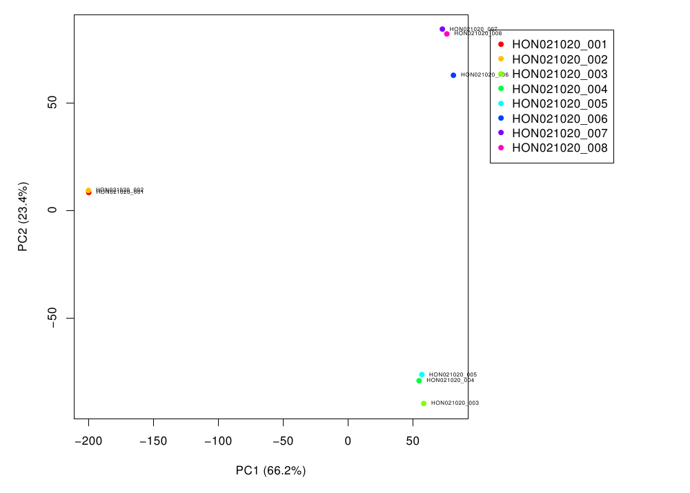

RNA-seq processing
Generated by: RIC Analysis
Report date: March 27, 2020
Overview
When you publish manuscripts based on data generated at our facility, we would greatly appreciate an acknowledgement of our efforts. Please cite our facility as follows (for example):
Basic processing of the raw data were performed by the University of Illinois at Chicago Core for Research Informatics (UICCRI).
We adhere to a general policy for acknowledgements and authorship as established by the Association for Biomolecular Resource Facilities (ABRF) , and we support the following statement from the ABRF.
The existence of core facilities depends in part on proper acknowledgment in publications. This is an important metric of the value of most core facilities. Proper acknowledgment of core facilities enables them to obtain financial and other support so that they may continue to provide their essential services in the best ways possible. It also helps core personnel to advance in their careers, adding to the overall health of the core facility.
Please contact us for assistance in drafting manuscripts.
Details
- Method: FastQC
-
General quality-control metrics for next-generation sequencing data were obtained using FastQC.
Details
- Method: STAR
-
Reads were aligned to the reference genome in a splice-aware manner using STAR.
- Method: PCR Duplicate Removal with Picard
-
Apparent PCR duplicates were checked or removed with Picard (note: for RNA-seq samples, the full set of alignments are used for gene expression quantification).
- Reference sequence database : hg38
-
Ref human genome v.hg38
Details
- Method: BWA MEM
-
Reads were aligned to the reference genome using BWA MEM.
- Reference sequence database : Human rRNA
-
Human ribosomal RNA sequences from NCBI and Ensembl
Details
- Method: FeatureCounts
-
Abundance of genomic features (e.g., genes) were quantified as raw counts based on read alignments using featureCounts.
- Method: EdgeR
-
Genomic features were normalized to CPM (counts per million reads) using edgeR.
- Method: EdgeR
-
Genomic features were normalized to CPM (counts per million reads) using edgeR.
- Gene annotation database : hg38 Ensembl
-
Ensembl annotations for human genome v.hg38
- 
Figure 1. PCA plot
Table 1. Data processing summary statistics Download table data
| Stats | Raw reads | Alignments | Percent | Alignments, duplicates removed | Percent | rRNA sequence counts | Percent | Gene sum | Percent | Genes expressed (out of 43836) | Entropy (base 2) | Isoform sum | Percent | Isoforms expressed (out of 179034) | Entropy (base 2) |
|---|---|---|---|---|---|---|---|---|---|---|---|---|---|---|---|
| SAMPLE_001 | 32819701 | 31715169 | 0.966345 | 21696191 | 0.661072 | 1509354 | 0.0459893 | 23340879 | 0.711185 | 22987 | 11.669 | 26320787 | 0.801981 | 104310 | 12.785 |
| SAMPLE_002 | 36145270 | 35023482 | 0.968964 | 23271904 | 0.643844 | 2312253 | 0.0639711 | 25366678 | 0.701798 | 23134 | 11.640 | 28781237 | 0.796266 | 105124 | 12.721 |
| SAMPLE_003 | 36405308 | 35113329 | 0.964511 | 24785999 | 0.680835 | 313247 | 0.00860443 | 28269845 | 0.776531 | 24998 | 12.263 | 31299546 | 0.859752 | 109761 | 13.451 |
| SAMPLE_004 | 38786673 | 37330463 | 0.962456 | 26996319 | 0.69602 | 546084 | 0.0140792 | 29437422 | 0.758957 | 25380 | 12.335 | 32687855 | 0.84276 | 112959 | 13.556 |
| SAMPLE_005 | 37195226 | 35883902 | 0.964745 | 25833651 | 0.694542 | 308503 | 0.00829416 | 28657295 | 0.770456 | 25096 | 12.287 | 31729687 | 0.853058 | 111106 | 13.519 |
| SAMPLE_006 | 33687382 | 32450733 | 0.96329 | 24837828 | 0.737304 | 291189 | 0.00864386 | 25210508 | 0.748366 | 25195 | 12.551 | 28139213 | 0.835304 | 112672 | 13.855 |
| SAMPLE_007 | 38527287 | 37196437 | 0.965457 | 26567494 | 0.689576 | 1053711 | 0.0273497 | 28499069 | 0.739711 | 25070 | 12.482 | 31869464 | 0.827192 | 113592 | 13.720 |
| SAMPLE_008 | 36057676 | 34785365 | 0.964715 | 26261660 | 0.728324 | 676564 | 0.0187634 | 26819594 | 0.743797 | 25271 | 12.543 | 29914309 | 0.829624 | 113654 | 13.825 |
Details
- Method: Kallisto
-
Gene isoforms were quantified with Kallisto, using k-mer-based pseudo-alignment and expectation maximization to probabilistically assign reads to isoforms.
- Reference sequence database : hg38 transcriptome
-
Human mRNA and long-non-coding transcriptome from Ensembl, genome hg38.